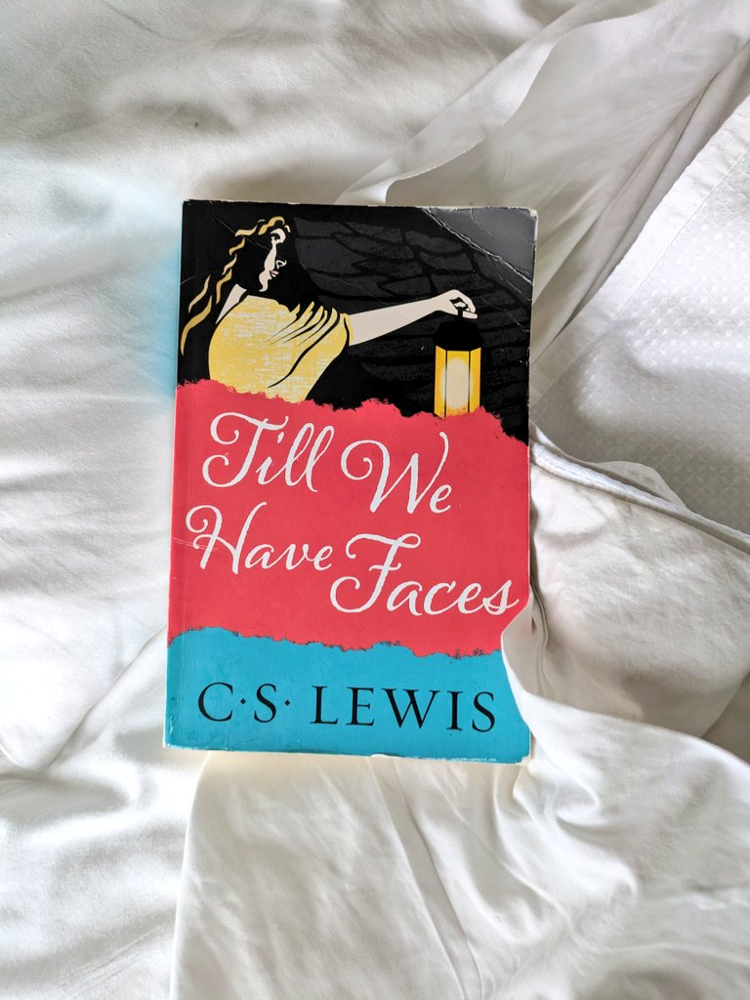
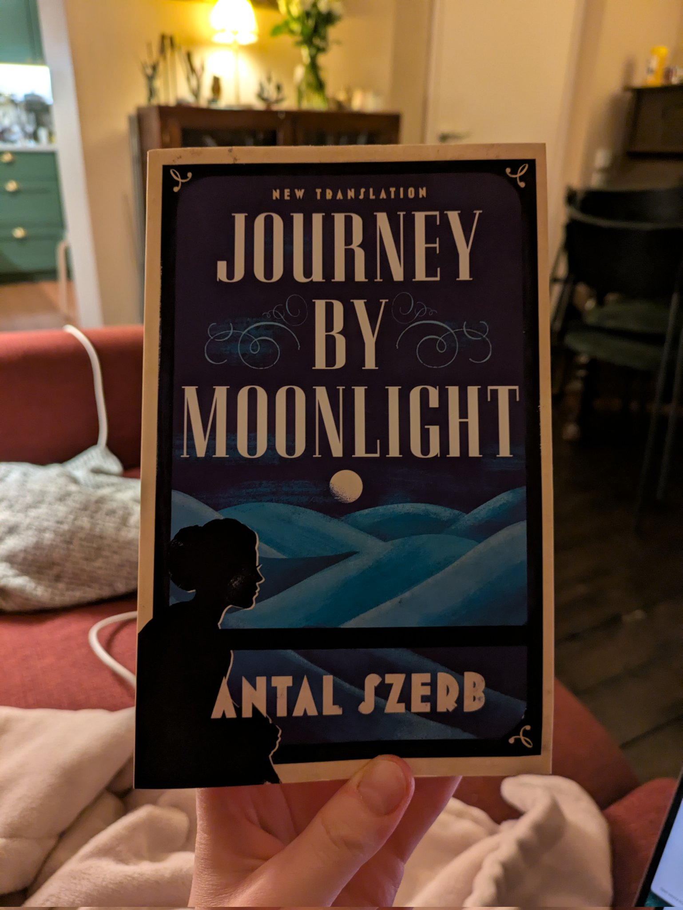
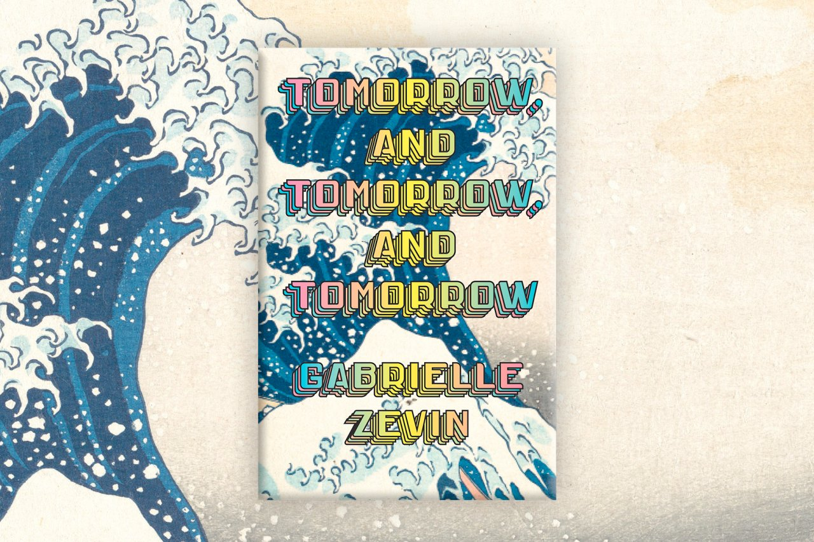
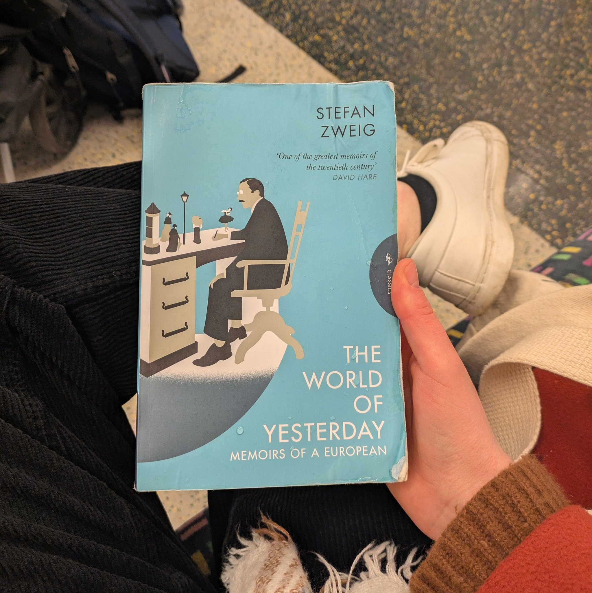
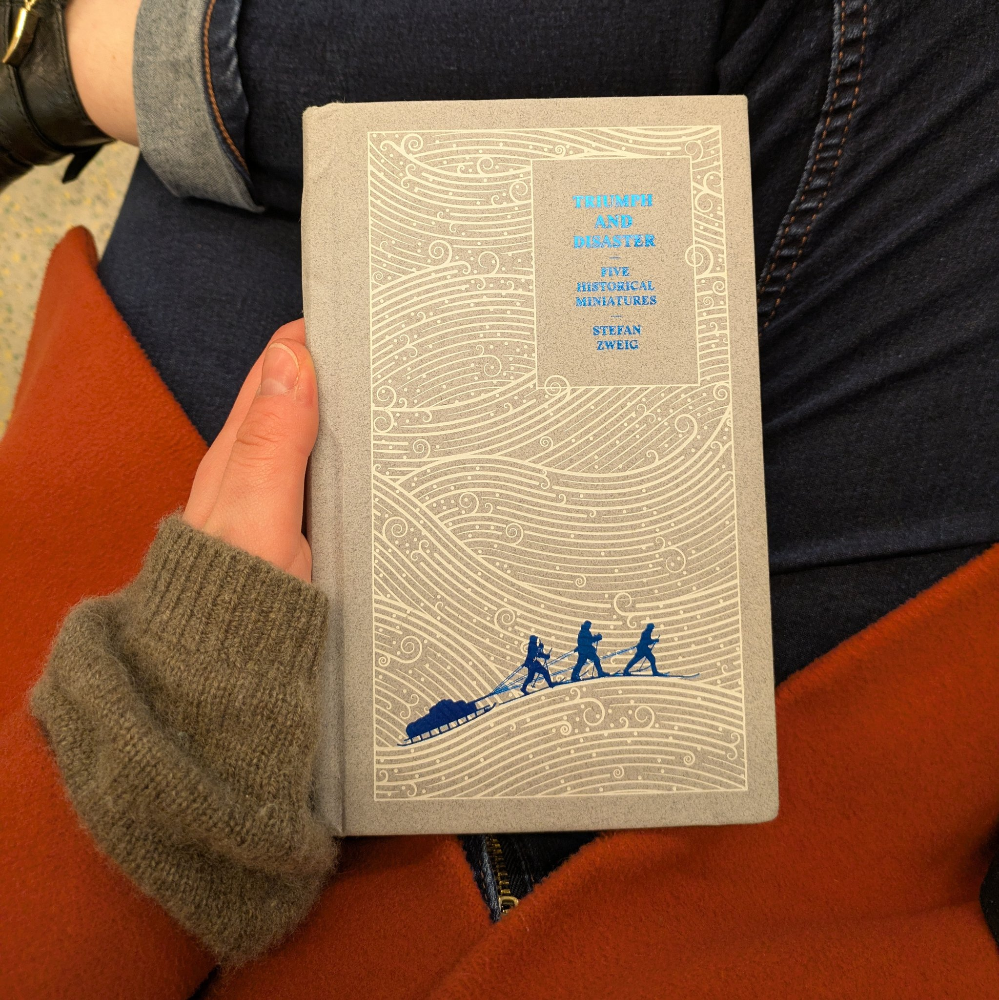

✦ Rachel Edwards ✦
Books I recommend

Maintenance: Of Everything: Part One, by Stewart Brand
Modern paperbacks are perfect-bound, held together with glue that will melt in the heat if you try to read in a sauna. So if you want to read in the sauna, you need a book that's sewn together. This book is brilliant, and will do the job.
The Hunchback of Notre-Dame, by Victor Hugo

Till We Have Faces, by CS Lewis
The myth of Cupid and Psyche, retold by Psyche's jealous elder sister. A glimpse into the terror, wonder, and monstrous ambiguity of faith, with an uncanny quality that's deeply unnerving. I sometimes felt like I was trespassing by reading it.
The Lost Books of the Odyssey, by Zachary Mason
Comparisons to Invisible Cities are entirely justified. Like its protagonist, this book is complicated, clever, and never the same thing twice.
Good Omens, by Neil Gaiman, Terry Pratchett

Journey By Moonlight, by Antal Szerb
Finding himself restless and agitated on honeymoon in Italy, Mihály makes a series of unexpected decisions driven by fear, neuroticism, and nostalgia for his intense and unconventional teenage friendships. I read this in one day, totally hypnotised, and sat stunned and wounded for hours afterwards.

Tomorrow and Tomorrow and Tomorrow, by Gabrielle Zevin
A shockingly good book about video games, friendship, and things going wrong. Tried to read it in the living room on holiday, but started crying and had to exile myself.

The World of Yesterday, by Stefan Zweig
Heartbreaking elegy for pre-WWI Vienna. Zweig writes very movingly about what was lost in the world wars, and his own statelessness after fleeing Austria.

Triumph and Disaster: Five Historical Miniatures, by Stefan Zweig
Another banger from Zweig. Scott's doomed expedition, the fall of Constantinople to the Ottomans, Lenin's journey to Russia in a sealed train – all excellent bedtime stories for aspiring Great Men of History.